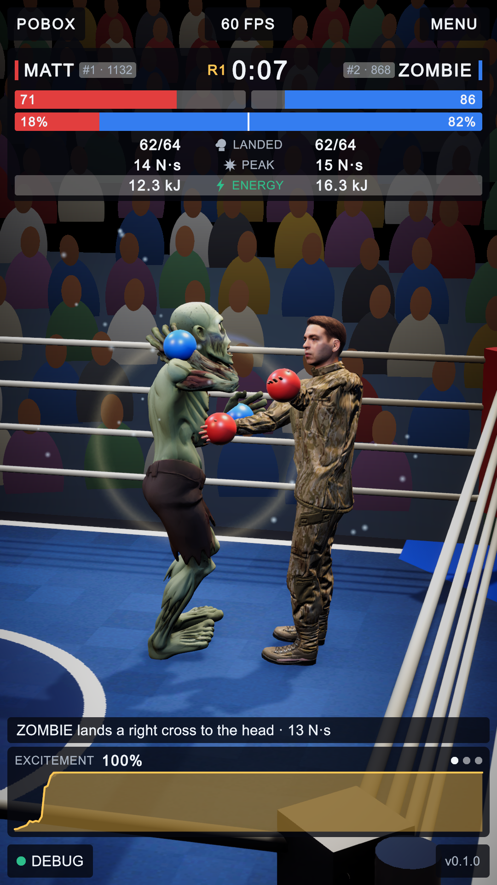
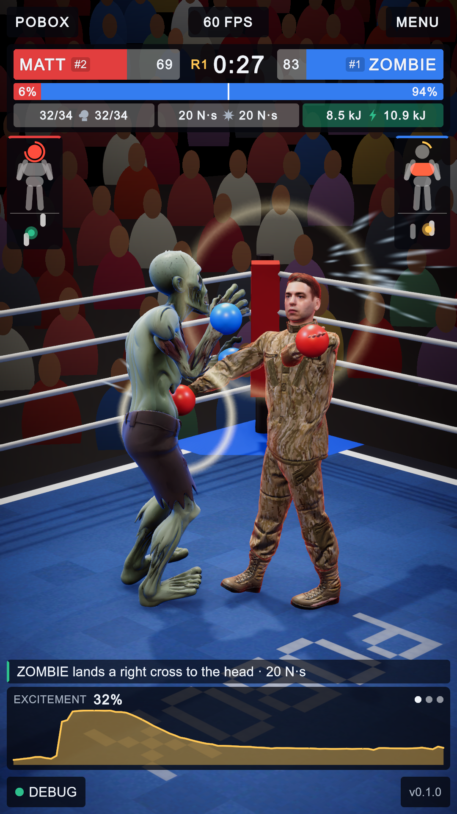
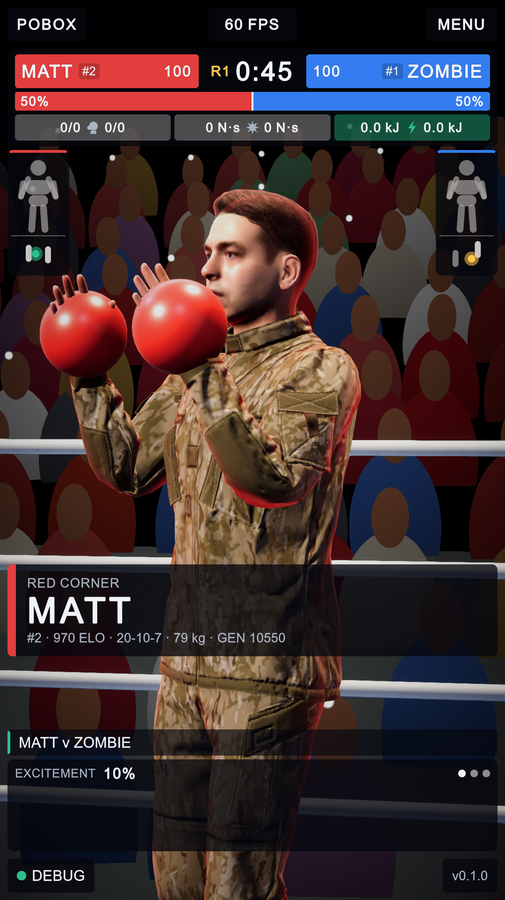
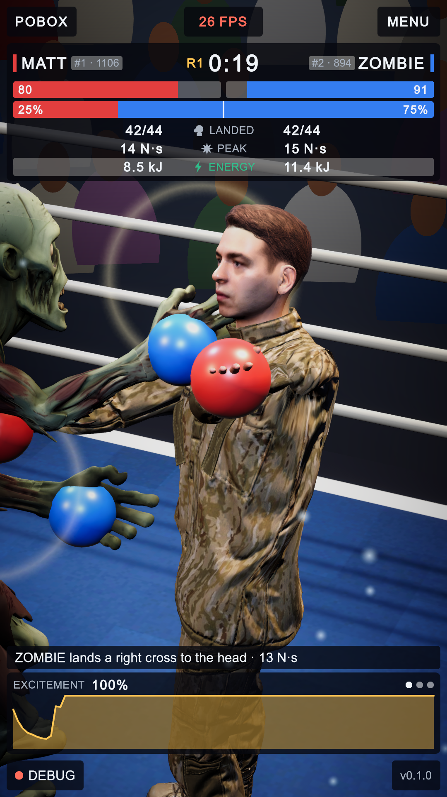
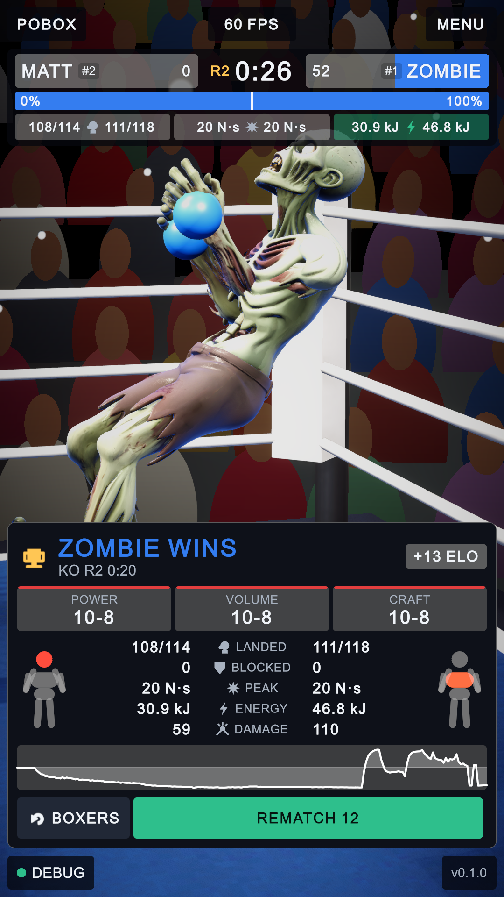
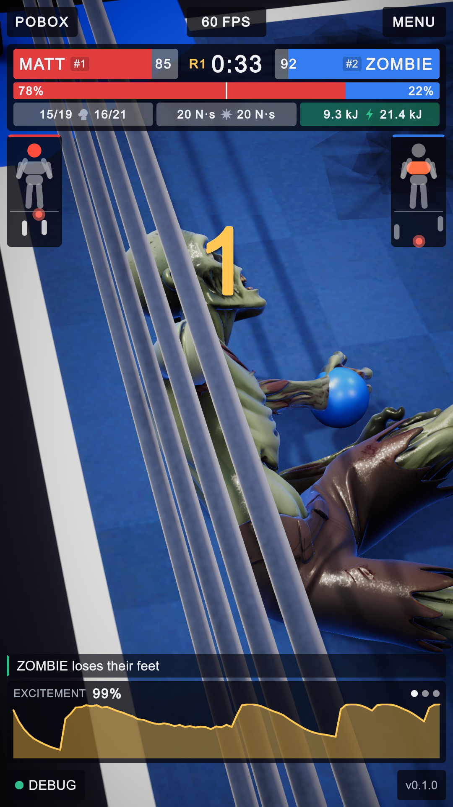
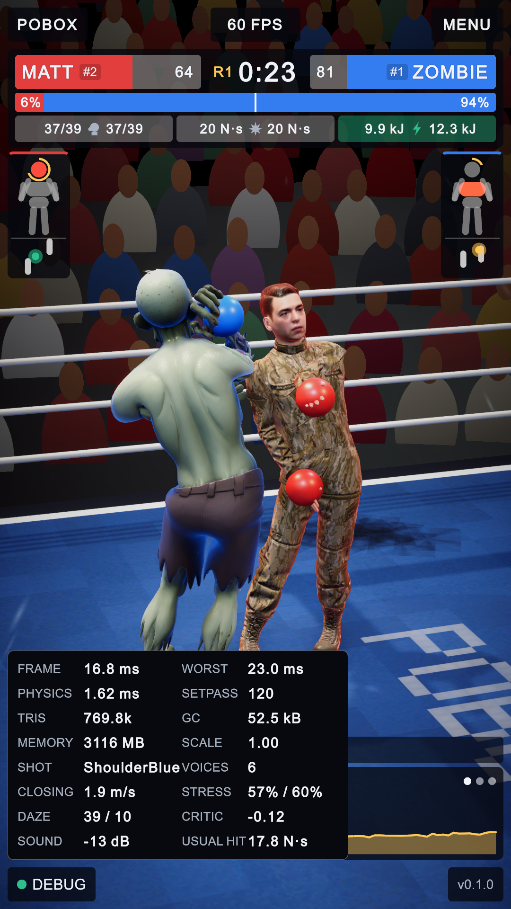

PoBox: the broadcast pass
1 October 2026, evening · the interface before and after, with what changed marked on the pictures · every picture is 1080 x 1920, taken from the running game
The owner picked twenty items from three lists: seven features, all ten graphics and sound items, and three interface consolidations. This page shows what the screen looked like before and what it looks like now. Letters mark what was there, numbers mark what is there now. What each item turned out to be, including the ones that are not finished, is in the table at the end and in DOCS/README.md; the training that two of the features needed has its own page, the defend rung.
The fight

A B C D E F G- Names in one row with rank and rating beside them.
- Health bars in a second row.
- The momentum bar: who is ahead, worked out from damage and health alone.
- The tale of the tape: three rows, each with a word in the middle (LANDED, PEAK, ENERGY).
- The commentary line, a bar that was always there, part of the dock.
- The excitement graph, which sat at 100% for the whole of every round: trained fighters land three punches a second between them and every one of them pushed it up.
- The hall: lit only by live lamps, so anything they did not reach was black; plain ropes; a canvas with nothing printed on it.
Scoreboard 332 px tall. Picture between scoreboard and commentary: 1,120 px.

1 2 3 4 5 6 7 8 9 10 11- One scoreboard row (UI 3). Each name is written on its own health bar, with its rank; the clock is between them. Rating and record moved to the walk-on card.
- Win probability (feature 3). The same bar, now read from the three judges' cards, what each fighter has left, and the two policies' own critics. The debug panel shows the critics' part by itself.
- Three chips (UI 4). Landed, hardest hit, and a third that cycles on a tap (energy, punches blocked, daze, joint stress, power). The icon is the label; the words are gone.
- Hit map (feature 5). Where this fighter has been hit, by impulse: cold grey, amber, red. The ring round the head fills as its daze rises and closes when its legs go.
- Balance gauge (feature 4). Two feet seen from above and a dot for where the body's weight is heading. Green planted, amber on the edge, red outside the feet.
- Commentary as a caption (UI 6). It lies over the picture and fades out five seconds after the last line, so most of the time that strip is picture.
- The dock is the graph alone. Excitement now measures what is out of the ordinary for these two fighters (a flurry, a fighter near the end of its legs), so it has a shape.
- The hall is lit (graphics 3). Baked light and light probes from the ring lamps and six dim house lights, ambient light and reflections from a photograph of a real boxing gym, cookies on the lamps.
- Ropes that bow (graphics 7): one mesh for all sixteen, pushed out by whatever is against them. Crowd (graphics 8): each half wears its corner's colour; cameras flash on a big punch.
- Decals (graphics 4): the promoter's mark printed on the canvas; wet spots and scuffs appear where punches and falls happen and fade.
- Sweat (graphics 6) leaves the head the way the glove was travelling, stretched along its flight.
Scoreboard 208 px tall. Picture between scoreboard and dock: 1,308 px, 17% more.
The walk-on (new)

1 2 3- The name card: corner, name, rank, rating, record, weight and how many iterations the policy has trained. Red for the first half of the walk-on, blue for the second.
- Each fighter stands in its own corner. A Timeline (Assets/Timeline/WalkOn.playable) cuts between two corner cameras, brings the house lights down and swings a follow-spot onto each fighter. It can be opened and re-cut in the Timeline window.
- Phone lights in the stands, which also come out for a count and for the result.
Nothing is simulated during the walk-on. At its end the two are stood at their marks and the first round's introduction runs as before.
The result card

A B C- The result was "POINTS 105-52": one number a fighter, damage done plus 15 for a knockdown.
- Four rows of numbers and the momentum graph.
- The cameras went back to circling the ring.

1 2 3 4 5 6- How it ended: a knockout with the round and time, or the kind of decision (unanimous, majority, split, or a draw).
- Three judges (feature 7): POWER, VOLUME and CRAFT, each scoring every round 10-9 by what it looks for. The stripe on a card is the colour of the corner it has ahead. After a stoppage the cards show how it stood.
- Each fighter's hit map for the whole bout, beside its column.
- A new row: punches each fighter stopped on its gloves and arms.
- The graph is the win-probability reading over the bout.
- The winner has a camera of its own and both follow-spots. The pods are hidden: the card carries the same maps.
A knockdown, and the debug panel

1 2 3- The count. A knockdown now comes from the rule the fighters are trained under: punches to the head add to a fighter's daze, the daze weakens its legs, and at the line the legs go.
- The balance gauge of a fighter that is down: the dot is red and off its feet.
- The commentary says who went down and, when they get up, at what count.

1 2 3 4- DAZE: both fighters' daze, in the trainer's units (the legs go at 42).
- CRITIC: the two policies' critics against each other, -1 (blue's outlook is better) to +1.
- SOUND: the finished mix's peak level, measured at the listener (graphics 1 and 10).
- USUAL: the clean impulse these two usually land; excitement, the crowd and the commentary's "big" are all measured against it.
One screen, checked
| State | 720 x 1280 | 1080 x 1920 | 1080 x 2400 |
|---|---|---|---|
| Fight, menu (three tabs), debug panel, three graph pages | pass | pass | pass |
| Walk-on card | not run | pass | not run |
| Result card with judges and hit maps | pass | pass | pass |
| Boxer menu | pass | pass | pass |
"Pass" is the layout audit: nothing off the screen, nothing that scrolls, no text under 26 px, no
label cut off, the five frame anchors in their corners. The first and last rows are play-mode tests
(10 of 10 pass, including two new ones for the judges); the other two were run by hand with the
layout dev command.
The twenty items
| Item | State | Note |
|---|---|---|
| F1 defence and knockdowns | done; one of the two defends | the daze rule, in training and in the game; see the defend rung |
| F2 get-up policy | built, not trained | the owner gave the GPU to another session's run before this rung started; the referee still stands a fighter up |
| F3 critic win-probability bar | done | policies now export their critic's value |
| F4 balance gauge | done | capture point against the feet |
| F5 hit map | done | in the pods and on the result card |
| F7 three judges | done | split decisions are possible; two tests |
| F10 Android build | APK built, never run on a phone | MuJoCo 3.3.7 for arm64 from joanllobera/mujoco-bin, with its own layout; the policies do not fall in that version either |
| G1 mix | done, not listened to | mixer asset, ducking, a meter and limiter on the listener |
| G2 layered impacts | done | recordings from Kenney's impact pack (CC0) |
| G3 baked lighting, cookies, HDRI | done, without Adaptive Probe Volumes | a light probe group carries the bake onto the fighters |
| G4 canvas decals | done | logo, wet spots, scuffs |
| G5 bruise and sweat on the meshes | done | marks where punches landed |
| G6 sweat and dust | done with the Particle System | not VFX Graph: its graphs cannot be authored from a script |
| G7 ropes that flex | done, not yet seen bowing | nobody leaned on a rope in the bouts watched |
| G8 crowd flashes | done | flashes, phone lights, corner colours |
| G9 walk-on and winner shot | done | Timeline and Cinemachine |
| G10 performance pass | done | the game's own code makes 0.1 kB of garbage a frame; the governor was run |
| UI 3, 4, 6 | done | scoreboard 332 px to 208 px |